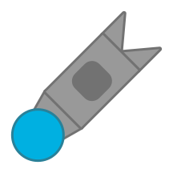

The Taurissiler is a tank that shoots fast but fragile missiles that burn enemies and split on death. It upgrades from Missiler and Taurus I (by The named BOSS) at level 60.
It has a team-colored circular body with a gray Missiler barrel and has a dark gray Taurus portal shape inscribed on the main rectangular barrel.
Said missiles look like real missiles, having their body with 4 square segments and a rotated Taurus Portal-shaped segment, as well as 2 fins, all team-colored and a gray rocket engine in the back.
Shoots very fast homing missiles that can be shot down with a single Basic bullet. It has a abysmal reload of 8s.
Said missiles split into 4 of Taurus I's Portals.
The named BOSS, for their Taurus I.
Taurus I is The named BOSS' authorship, not mine. Ask him for permission before adding this to your private server.
His Discord username is the_named_boss.

Tier 5 Tank
Upgrades from Missiler and Taurus I
Weapons:
Has same body stats as Launcher
A Taurus I missile launcher.